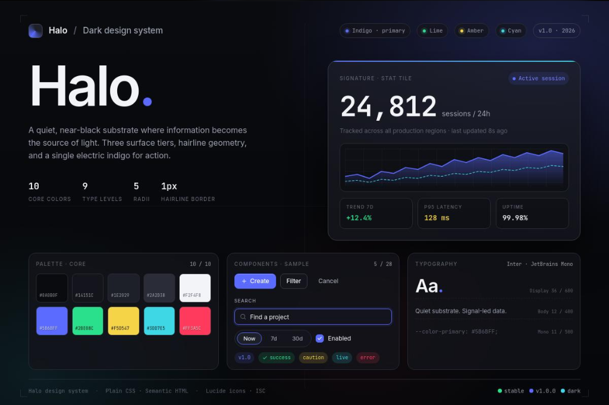

Design System · 2026
Case de Destaque

Lumina — Design System Corporativo
Ecossistema completo de componentes e tokens de design desenvolvido para unificar múltiplos produtos digitais, garantindo consistência visual, rapidez no desenvolvimento e acessibilidade.